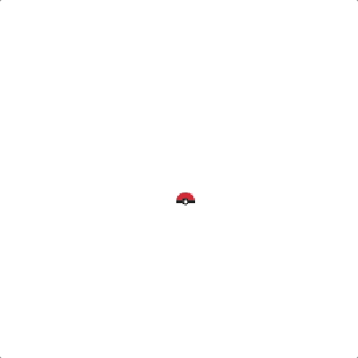

커서를 따라다니는 포켓몬.
작은 macOS 메뉴바 앱. 도트 포켓몬이 화면을 거닐며 마우스를 쫓고, 멈추면 웅크려 잠듭니다. 키우기 모드를 켜면 배틀하고, 잡고, 진화시킬 수도 있습니다.
무료 · 계정 불필요 · 드래그 한 번으로 설치.

작지만 사랑스러운 앱
모든 게 메뉴바에서 조용히 돌아갑니다. 한 번 설정하면 존재를 잊게 됩니다.
메뉴바 전용
Dock 아이콘 없이 메뉴바에 발바닥 하나. 작업을 방해하지 않습니다.
물리 기반 추적
커서와 거리를 두고 자신의 속도·가속도로 움직여, 커서에 붙어있는 게 아니라 살아있는 느낌을 줍니다.
8방향 애니메이션
스프라이트가 이동 방향으로 몸을 돌립니다. 진짜 도트 감성 그대로.
대기 → 수면
멈추면 가만히 있다가 잠들고, 마우스를 움직이면 바로 깨어납니다.
포켓몬 251마리
1·2세대 전부, 그중 124마리는 다른 색상까지. 미리보기·화살표·랜덤 버튼으로 선택합니다.
키우기 모드
야생 조우, 화면 위 자동 배틀, 경험치와 진화, 몬스터볼 포획, 6마리 파티와 아이템 가방.
클릭 통과 · 멀티 모니터
작업을 막지 않는 투명 오버레이, 디스플레이 사이도 자연스럽게 넘나듭니다.

키우기 모드
팔로워를 직접 키우는 포켓몬으로 바꿔보세요. 클래식 스타터 6마리 중 하나를 고르면:
- 야생 포켓몬이 데스크톱에 나타나 배회합니다 — 다가가면 타입 상성·기술 이펙트·상태이상이 반영된 자동 배틀이 오버레이 위에서 펼쳐집니다
- 승리하면 경험치를 획득: 레벨업이 머리 위에 표시되고, 새 기술을 배우며, 진화는 클래식 화이트아웃 연출로 재생됩니다
- 약해진 야생을 몬스터볼로 포획해 최대 6마리 파티를 꾸립니다
- 아이템이 데스크톱에 떨어집니다 — 밟고 지나가 획득하고 회복약·볼·진화 아이템을 가방에서 사용합니다
- 다친 멤버는 배틀 밖에서 회복되고(잠들면 더 빠르게), 자정에는 파티 전체가 완전 회복됩니다
배틀은 데스크톱 위에서 그대로 펼쳐집니다
배회하는 야생에게 팔로워를 데려가면 만난 자리에서 바로 맞붙습니다 — 별도의 배틀 화면 없이:
- 스피드에 따라 턴 순서가 정해지고, 모든 기술이 도트 이펙트와 함께 나갑니다 — 투사체, 돌진, 전체 화면 섬광
- 타입 상성은 "Super Effective!" 태그로 뜨고, 상태이상도 눈에 보이게 연출됩니다 (Zzz, 화상 불꽃, 마비 스파크)
- 머리 위 HP 바가 깎여 나가고 — 이겨서 경험치를 얻거나, 약해진 야생에게 볼을 던지거나, 본가처럼 턴이 끝난 뒤 집어넣어 도망칩니다


아이템을 줍고, 몬스터볼로 잡고
이따금 데스크톱 어딘가에 아이템이 떨어집니다 — 팔로워를 데려가 밟으면 획득:
- 몬스터볼과 상처약은 자주, 진화의 돌·기력의 조각·통신 진화 아이템은 드물게 나옵니다
- 가방에서 포획을 켜면 약해지거나 상태이상에 걸린 야생에게 배틀 중 자동으로 볼을 던집니다 — 포물선으로 날아가 흔들리다 찰칵 닫히는 연출까지
- 잡힌 야생은 파티(최대 6마리)에 합류 — 따라다닐 포켓몬은 언제든 교체하고, 상처약·진화 아이템은 패널에서 사용합니다

내 취향대로
메뉴바에서 Settings를 열면 모든 변경이 즉시 반영됩니다:
- 선택한 캐릭터 미리보기, ◀ ▶ 화살표와 랜덤 버튼
- 커서와의 거리, 최대 속도, 캐릭터 크기
- 잠들기까지 걸리는 시간
- 다른 색상 스프라이트와 부드러운 발밑 그림자
- 로그인 시 자동 실행
동작 방식
이동은 마우스 속도와 무관합니다 — 빠르게 움직이면 뒤처졌다가 자신의 속도로 따라잡습니다.
걷기 → 멈춤 → 대기 → [잠들기까지 시간] → 수면
↑ 커서 이동 ↓
└──── 걷기 ────┘
30초면 설치
Xcode도 개발자 도구도 필요 없이, 받아서 드래그만.
다운로드
Releases에서 최신 .dmg를 받아 엽니다.
Applications로 드래그
Pokémon Mouse Follower를 응용 프로그램 폴더로 옮깁니다.
실행
Launchpad에서 실행하면 메뉴바에 🐾가 뜨고 포켓몬이 마우스를 따라다닙니다.
자주 묻는 질문
Pokémon Mouse Follower는 무엇인가요?
무료 오픈소스 macOS 메뉴바 앱입니다. 도트 포켓몬 캐릭터가 화면을 돌아다니며 마우스 커서를 따라다닙니다. 커서와 약간의 거리를 두고, 자신의 속도와 가속도로 움직입니다.
무료인가요?
네 — 완전히 무료이며 오픈소스입니다. 전체 소스 코드는 GitHub에서 볼 수 있습니다.
어떤 macOS 버전을 지원하나요?
macOS 13(Ventura) 이상, Apple Silicon과 Intel 맥 모두(universal 빌드).
맥이 느려지거나 클릭을 막나요?
아니요. 투명한 클릭 통과 오버레이에 그려지는 가벼운 메뉴바 앱이라 아래 앱을 방해하지 않고, Dock 아이콘도 없습니다.
포켓몬은 몇 마리 중에서 고를 수 있나요?
1·2세대 251마리, 그리고 대체 색상이 있는 124마리의 다른 색상 스프라이트. 미리보기·화살표·랜덤 버튼으로 둘러볼 수 있습니다.
키우기 모드는 무엇인가요?
팔로워를 직접 키우는 포켓몬으로 바꾸는 선택 모드입니다. 야생 포켓몬이 데스크톱에 출현하고, 오버레이 위에서 자동 배틀(타입 상성, 기술 이펙트, 상태이상)이 펼쳐지며, 승리하면 경험치와 진화를 얻습니다. 몬스터볼로 포획해 최대 6마리 파티와 아이템 가방을 운영할 수 있습니다. 진행 상황은 자동 저장됩니다.
어떻게 설치하나요?
Releases에서 .dmg를 받아 앱을 Applications로 드래그한 뒤 실행합니다. macOS에서 그냥 열리며 개발자 도구는 필요 없습니다.
어떻게 삭제하나요?
메뉴바 🐾 아이콘 → 종료 후, 응용 프로그램에서 앱을 휴지통으로 옮기면 됩니다.
스프라이트는 어디서 왔나요?
도트 애니메이션은 커뮤니티 프로젝트인 PMD Sprite Collab에서 가져왔습니다. 비상업적 개인 팬 프로젝트이며, Pokémon © Nintendo / Creatures Inc. / GAME FREAK inc.